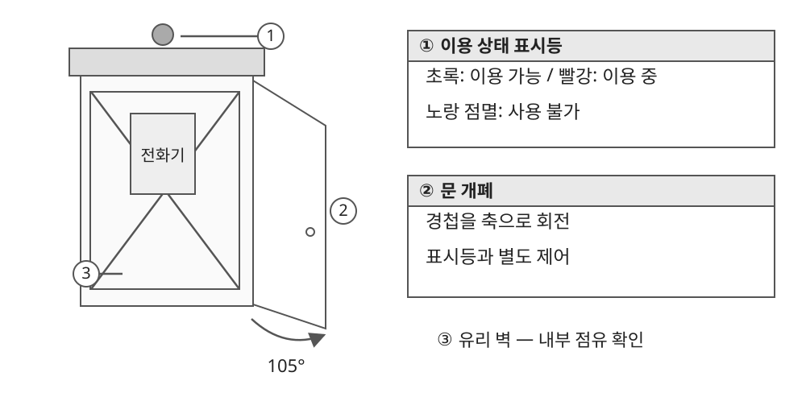

4.1 전화부스 오브젝트 기획
● 기능 개요
- 정보 획득을 위해 접근하는 장소로, 이용 상태를 멀리서 구분할 수 있도록 표시등 사용.
- 내부 점유 여부를 확인할 수 있는 유리 벽과 출입문으로 구성.
- 문 개폐와 표시등은 별도로 제어하여 게임의 상태 변경에 대응.

| 구분 | 표현, 동작 | 처리 기준 |
|---|---|---|
| 이용 가능 | 초록 표시등 | 진입 가능한 상태를 전달 |
| 이용 중 | 빨강 표시등 | 내부 점유 상태와 연동 |
| 사용 불가 | 노랑 점멸 | 이용 가능, 이용 중과 구분 |
| 문 열기 | 경첩을 기준으로 105° 회전 | 문과 본체의 기준축 일치 |
| 도중 반전 | 열기, 닫기 입력 전환 | 진행 중인 각도에서 자연스럽게 전환 |
| 여러 부스 | 상태를 개별 관리 | 한 부스의 조작이 다른 부스에 영향을 주지 않음 |
● 적용 범위 및 검수
- 시험 씬: 문 개폐, 내부 점유, 초록/빨강 표시 연동 확인.
- 본게임 정보 조회 이벤트 연결은 별도 작업으로 구분.
- 문 회전축, 재질, 반복 조작, 여러 인스턴스의 독립 동작 확인.